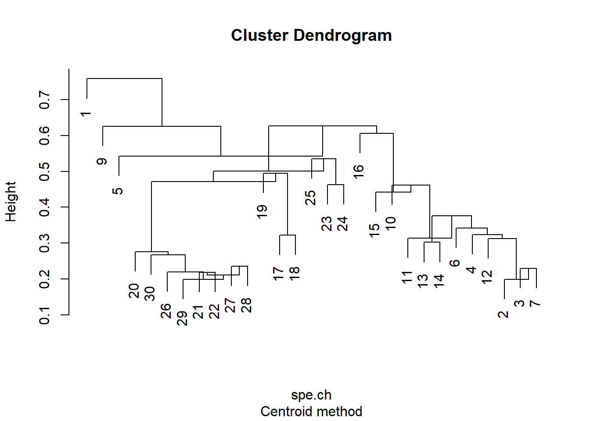
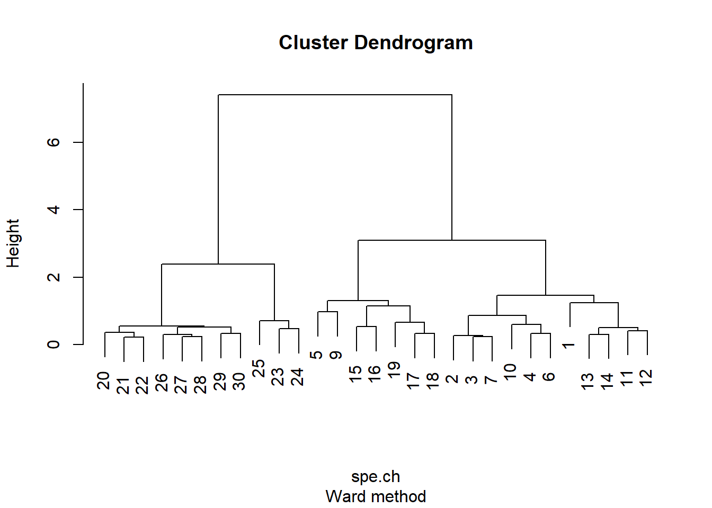
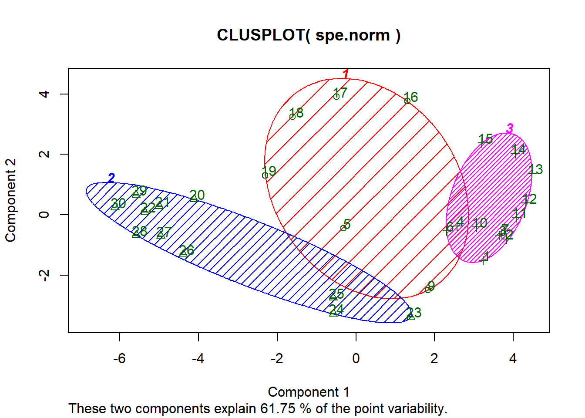

Hierarchical clustering (HC)
In this analysis we will see how to make a hierarchical clustering model. The objectives are to explore if there are similar groups of elements and to see how they are interrelated .
As example, we will use the Doubs database, based on a sample of fish from the Doubs river in France.
1- Data preparation
We need to remove the rows with double 0 or NA and then normalize the values.
data(doubs)
spe <- doubs$fish[-8,]
env <- doubs$env[-8,]
spa <- doubs$xy[-8,]
spe.norm <- decostand(spe, "normalize")
spe.ch <- vegdist(spe.norm, "euc") 2- Choosing the clustering method.
Single method
spe.ch.single <- hclust(spe.ch, method = "single")
plot(spe.ch.single, sub = "Single method")Complete method
spe.ch.complete <- hclust(spe.ch, method = "complete")
plot(spe.ch.complete, sub = "Complete method") UPGMA method
spe.ch.UPGMA <- hclust(spe.ch, method = "average")
plot(spe.ch.UPGMA, sub = "UPGMA method")Centroid method
spe.ch.centroid <- hclust(spe.ch, method = "centroid")
plot(spe.ch.centroid, sub = "Centroid method")
Ward method
spe.ch.ward <- hclust(spe.ch, method = "ward.D")
plot(spe.ch.ward, sub = "Ward method")
Squared transformation
spe.ch.ward$height <- sqrt(spe.ch.ward$height)
plot(spe.ch.ward, sub = "Squared height method")3- Choosing the best method
We can see overfitting in the centroid method case. In the rest of cases we have to calculate: - Cophenetic correlation. - Gower distance value.
3.1. Cophenetic correlation
spe.ch.single.coph <- cophenetic(spe.ch.single) # Single
paste("Single cophenetic:", cor(spe.ch, spe.ch.single.coph))## [1] "Single cophenetic: 0.599192957534406"spe.ch.comp.coph <- cophenetic(spe.ch.complete) # Complete
paste("Complete cophenetic:", cor(spe.ch, spe.ch.comp.coph))## [1] "Complete cophenetic: 0.765562801324477"spe.ch.UPGMA.coph <- cophenetic(spe.ch.UPGMA) # Average
paste("UPGMA cophenetic:", cor(spe.ch, spe.ch.UPGMA.coph))## [1] "UPGMA cophenetic: 0.860832629864453"spe.ch.ward.coph <- cophenetic(spe.ch.ward) # Ward
paste("Ward cophenetic:", cor(spe.ch, spe.ch.ward.coph))## [1] "Ward cophenetic: 0.798507946871249"cor(spe.ch, spe.ch.ward.coph, method = "spearman")## [1] 0.7661171Graphical representation of the cophenetic correlation (Shepard diagram)
par(mfrow = c(2, 2))
plot(spe.ch, spe.ch.single.coph, xlab = "Chord distance",
ylab = "Cophenetic distance", asp = 1, xlim = c(0, sqrt(2)), ylim = c(0, sqrt(2)),
main = c("Single linkage", paste("Cophenetic correlation =",
round(cor(spe.ch, spe.ch.single.coph), 3))))
abline(0, 1); lines(lowess(spe.ch, spe.ch.single.coph), col = "red")
plot(spe.ch, spe.ch.comp.coph, xlab = "Chord distance",
ylab = "Cophenetic distance", asp = 1, xlim = c(0,sqrt(2)), ylim = c(0,sqrt(2)),
main = c("Complete linkage", paste("Cophenetic correlation =",
round(cor(spe.ch, spe.ch.comp.coph), 3))))
abline(0, 1); lines(lowess(spe.ch, spe.ch.comp.coph), col = "red")
plot(spe.ch, spe.ch.UPGMA.coph, xlab = "Chord distance",
ylab = "Cophenetic distance", asp = 1, xlim = c(0,sqrt(2)), ylim = c(0,sqrt(2)),
main = c("UPGMA", paste("Cophenetic correlation =",
round(cor(spe.ch, spe.ch.UPGMA.coph), 3))))
abline(0, 1); lines(lowess(spe.ch, spe.ch.UPGMA.coph), col = "red")
plot(spe.ch, spe.ch.ward.coph, xlab = "Chord distance",
ylab = "Cophenetic distance", asp = 1, xlim = c(0,sqrt(2)),
ylim = c(0,max(spe.ch.ward$height)),
main = c("Ward clustering", paste("Cophenetic correlation =",
round(cor(spe.ch, spe.ch.ward.coph), 3))))
abline(0, 1); lines(lowess(spe.ch, spe.ch.ward.coph), col = "red")The best fitted method is the UPGMA, with a cophenetic correlation of .861.
Gower distance (the lower the better)
(gow.dist.single <- sum((spe.ch - spe.ch.single.coph) ^ 2))## [1] 95.41391(gow.dist.comp <- sum((spe.ch - spe.ch.comp.coph) ^ 2))## [1] 40.48897(gow.dist.UPGMA <- sum((spe.ch - spe.ch.UPGMA.coph) ^ 2))## [1] 11.6746(gow.dist.ward <- sum((spe.ch - spe.ch.ward.coph) ^ 2))## [1] 532.0055The best method still is UPGMA.
3- Choosing the final number of conglomerates.
To this effect we will use three tests: - a- Fussion level plot - b- Silhouette plot - c- Mantel value
a- Fussion level
dev.off()## null device
## 1plot(spe.ch.ward$height, nrow(spe) : 2, type = "S",
main = "Fusion levels - Chord - Ward",
ylab = "k (number of clusters)", xlab = "h (node height)", col = "grey")
text(spe.ch.ward$height, nrow(spe) : 2, nrow(spe) : 2, col = "red", cex = 0.8)By the length of the fussion line the best number of k groups must be 2 or 4.
b- Silhouette plot
asw <- numeric(nrow(spe))
for(k in 2:(nrow(spe) - 1)){
sil <- silhouette(cutree(spe.ch.ward, k = k), spe.ch)
asw[k] <- summary(sil)$avg.width}
k.best <- which.max(asw)
plot(1: nrow(spe), asw, type="h",
main = "Silhouette-optimal number of clusters",
xlab = "k (number of groups)", ylab = "Average silhouette width")
axis(1, k.best, paste("optimum", k.best, sep = "\n"), col = "red", font = 2,
col.axis = "red")
points(k.best, max(asw), pch = 16, col = "red", cex = 1.5)cat("", "Silhouette-optimal number of clusters k =", k.best, "\n",
"with an average silhouette width of", max(asw), "\n")## Silhouette-optimal number of clusters k = 2
## with an average silhouette width of 0.3658319c- Mantel value
grpdist <- function(X){
require(cluster)
gr <- as.data.frame(as.factor(X))
distgr <- daisy(gr, "gower")
distgr}
kt <- data.frame(k = 1:nrow(spe), r = 0)
for(i in 2:(nrow(spe) - 1)){
gr <- cutree(spe.ch.ward, i)
distgr <- grpdist(gr)
mt <- cor(spe.ch, distgr, method = "pearson")
kt[i, 2] <- mt}
k.best <- which.max(kt$r)
plot(kt$k, kt$r, type = "h", main = "Mantel-optimal number of clusters",
xlab = "k (number of groups)", ylab = "Pearson's correlation")
axis(1, k.best, paste("optimum", k.best, sep = "\n"), col = "red", font = 2,
col.axis = "red")
points(k.best, max(kt$r), pch = 16, col = "red", cex = 1.5)cat("", "Mantel-optimal number of clusters k =", k.best, "\n",
"with a matrix linear correlation of", max(kt$r), "\n")## Mantel-optimal number of clusters k = 4
## with a matrix linear correlation of 0.7154912The first and second method tells us that the best number is k = 2. The Mantel value indicates that the number must be 4. Since the theory suggests the best number is 4, we will validate our model for k = 4.4
4- Final validation of the model (k = 4)
k <- 4
cutg <- cutree(spe.ch.ward, k = k)
sil <- silhouette(cutg, spe.ch)
rownames(sil) <- row.names(spe)
plot(sil, main = "Silhouette plot",
cex.names = 0.8, col = 2:(k + 1), nmax = 100)The groups are coherent, the second group has two unclassified values though.
5- Final plot
We will use the hcoplot function created by Francois Gillet (2012)
hcoplot <- function(tree, diss, k,
title=paste("Reordered dendrogram from", deparse(tree$call), sep="\n"))
{
require(gclus)
gr <- cutree(tree, k=k)
tor <- reorder.hclust(tree, diss)
plot(tor, hang=-1, xlab=paste(length(gr),"sites"), sub=paste(k,"clusters"),
main=title)
so <- gr[tor$order]
gro <- numeric(k)
for (i in 1:k)
{
gro[i] <- so[1]
if (i<k) so <- so[so!=gro[i]]
}
rect.hclust(tor, k=k, border=gro+1, cluster=gr)
legend("topright", paste("Cluster",1:k), pch=22, col=2:(k+1), bty="n")
}
hcoplot(spe.ch.ward, spe.ch, k = 4)Non-Hierarchical clustering (NHC)
This time we will make a k-mean clustering model.
1- We have to normalize the data. This step is already done in the previous analysis.
2- Choosing the conglomerate method.
set.seed(1)
(spe.kmeans <- kmeans(spe.norm, centers = 4, nstart = 100)) ## K-means clustering with 4 clusters of sizes 8, 6, 12, 3
##
## Cluster means:
## Cogo Satr Phph Neba Thth Teso
## 1 0.00000000 0.006691097 0.02506109 0.06987391 0.006691097 0.006691097
## 2 0.06167791 0.122088022 0.26993915 0.35942538 0.032664966 0.135403325
## 3 0.10380209 0.542300691 0.50086515 0.43325916 0.114024105 0.075651573
## 4 0.00000000 0.000000000 0.00000000 0.00000000 0.000000000 0.000000000
## Chna Chto Lele Lece Baba Spbi
## 1 0.10687104 0.09377516 0.14194394 0.2011411 0.24327992 0.1326062
## 2 0.06212775 0.21568957 0.25887226 0.2722562 0.15647062 0.1574388
## 3 0.00000000 0.00000000 0.06983991 0.1237394 0.02385019 0.0000000
## 4 0.05205792 0.00000000 0.07647191 0.3166705 0.00000000 0.0000000
## Gogo Eslu Pefl Rham Legi Scer
## 1 0.28386032 0.20630360 0.16920496 0.2214275 0.19066542 0.13171275
## 2 0.16822286 0.12276089 0.17261621 0.0793181 0.06190283 0.04516042
## 3 0.05670453 0.04722294 0.02949244 0.0000000 0.00000000 0.00000000
## 4 0.20500174 0.07647191 0.00000000 0.0000000 0.05205792 0.07647191
## Cyca Titi Abbr Icme Acce Ruru
## 1 0.16019126 0.26230024 0.19561641 0.1331835 0.26713081 0.32103755
## 2 0.06190283 0.14539027 0.01473139 0.0000000 0.03192175 0.32201597
## 3 0.00000000 0.03833408 0.00000000 0.0000000 0.00000000 0.01049901
## 4 0.00000000 0.00000000 0.00000000 0.0000000 0.18058775 0.31667052
## Blbj Alal Anan
## 1 0.22883055 0.3326939 0.18873077
## 2 0.01473139 0.1095241 0.04739636
## 3 0.00000000 0.0000000 0.00000000
## 4 0.05205792 0.7618709 0.00000000
##
## Clustering vector:
## 1 2 3 4 5 6 7 9 10 11 12 13 14 15 16 17 18 19 20 21 22 23 24 25 26
## 3 3 3 3 2 3 3 2 3 3 3 3 3 3 2 2 2 2 1 1 1 4 4 4 1
## 27 28 29 30
## 1 1 1 1
##
## Within cluster sum of squares by cluster:
## [1] 0.4696535 1.7361453 2.5101386 0.3560423
## (between_SS / total_SS = 66.7 %)
##
## Available components:
##
## [1] "cluster" "centers" "totss" "withinss"
## [5] "tot.withinss" "betweenss" "size" "iter"
## [9] "ifault"We created our model with 4 groups, the same as the previous HC model. Here we have the centroids of each cluster, the groups and the variance of each cluster.
3- Choosing the number of conglomerates and validation of the model.
To do this, we will use the next criteria: - Calinski & Harabasz value - Simple structure index (SSI) - Sum of squared errors (SSE) - Silhouette plot
spe.KM.cascade <- cascadeKM(spe.norm, inf.gr = 2, sup.gr = 10, iter = 100, criterion = "ssi")
spe.KM.cascade$results ## 2 groups 3 groups 4 groups 5 groups 6 groups 7 groups
## SSE 8.2149405 6.4768108 5.0719796 4.30155732 3.58561200 2.9523667
## ssi 0.1312111 0.1685126 0.1420398 0.06098547 0.08405525 0.1394601
## 8 groups 9 groups 10 groups
## SSE 2.48405487 2.0521888 1.7599292
## ssi 0.07555728 0.1010821 0.1061174head(spe.KM.cascade$partition)## 2 groups 3 groups 4 groups 5 groups 6 groups 7 groups 8 groups 9 groups
## 1 1 1 1 2 5 7 2 2
## 2 1 1 1 5 3 4 6 7
## 3 1 1 1 5 3 4 6 7
## 4 1 1 1 5 3 4 6 7
## 5 2 2 2 1 1 6 1 6
## 6 1 1 1 5 3 4 6 7
## 10 groups
## 1 4
## 2 3
## 3 3
## 4 3
## 5 9
## 6 2plot(spe.KM.cascade, sortg = TRUE) The statistics are not determining. By its SSE, the best number is 2 and by its SSI is 3.
(spe.kmeans <- kmeans(spe.norm, centers = 3, nstart = 100)) ## K-means clustering with 3 clusters of sizes 6, 11, 12
##
## Cluster means:
## Cogo Satr Phph Neba Thth Teso
## 1 0.06167791 0.122088022 0.26993915 0.35942538 0.032664966 0.135403325
## 2 0.00000000 0.004866252 0.01822625 0.05081739 0.004866252 0.004866252
## 3 0.10380209 0.542300691 0.50086515 0.43325916 0.114024105 0.075651573
## Chna Chto Lele Lece Baba Spbi
## 1 0.06212775 0.21568957 0.25887226 0.2722562 0.15647062 0.15743876
## 2 0.09192201 0.06820012 0.12408793 0.2326491 0.17693085 0.09644087
## 3 0.00000000 0.00000000 0.06983991 0.1237394 0.02385019 0.00000000
## Gogo Eslu Pefl Rham Legi Scer
## 1 0.16822286 0.12276089 0.17261621 0.0793181 0.06190283 0.04516042
## 2 0.26235343 0.17089496 0.12305815 0.1610382 0.15286338 0.11664707
## 3 0.05670453 0.04722294 0.02949244 0.0000000 0.00000000 0.00000000
## Cyca Titi Abbr Icme Acce Ruru
## 1 0.06190283 0.14539027 0.01473139 0.00000000 0.03192175 0.32201597
## 2 0.11650273 0.19076381 0.14226648 0.09686076 0.24352816 0.31984654
## 3 0.00000000 0.03833408 0.00000000 0.00000000 0.00000000 0.01049901
## Blbj Alal Anan
## 1 0.01473139 0.1095241 0.04739636
## 2 0.18061983 0.4497421 0.13725875
## 3 0.00000000 0.0000000 0.00000000
##
## Clustering vector:
## 1 2 3 4 5 6 7 9 10 11 12 13 14 15 16 17 18 19 20 21 22 23 24 25 26
## 3 3 3 3 1 3 3 1 3 3 3 3 3 3 1 1 1 1 2 2 2 2 2 2 2
## 27 28 29 30
## 2 2 2 2
##
## Within cluster sum of squares by cluster:
## [1] 1.736145 2.230527 2.510139
## (between_SS / total_SS = 57.5 %)
##
## Available components:
##
## [1] "cluster" "centers" "totss" "withinss"
## [5] "tot.withinss" "betweenss" "size" "iter"
## [9] "ifault"dissE <- daisy(spe.norm)
sk <- silhouette(spe.kmeans$cl, dissE)
plot(sk)4- Final plot and interpretation
spebc.ward.g<-cutree(spe.ch.ward,k=4)
table(spe.kmeans$cluster, spebc.ward.g)## spebc.ward.g
## 1 2 3 4
## 1 0 6 0 0
## 2 0 0 8 3
## 3 11 1 0 0They only differ in just one case.
clusplot(spe.norm, spe.kmeans$cluster, color = TRUE, shade = TRUE,
labels = 2, lines = 0)
Copyright © 2019 David Valls Lanaquera All rights reserved